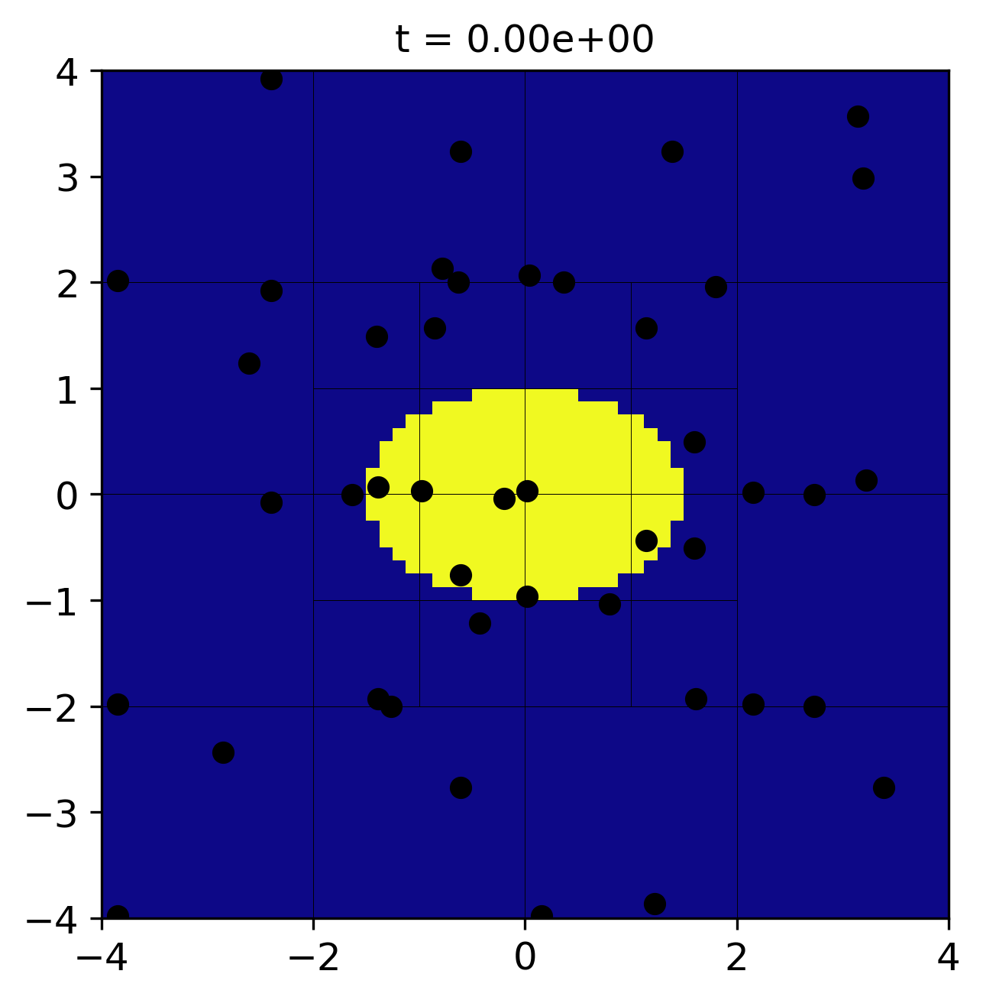
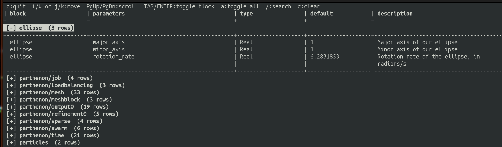

Writing your first Parthenon-based Code
In this tutorial, we will walk through how to write a Parthenon-based code from scratch. We’ll build a simple toy code that rotates an ellipse in a circle, with AMR, to demonstrate the elements that make up a Parthenon code and high-level Parthenon concepts.
A full working version of the code described here is available on the Parthenon-HPC-Lab github.
Prerequisites
Parthenon requires, at a minimum, a C++20 compiler, Git, and CMake. Most real applications also require an MPI library (MPI stands for message passing interface) for parallelism. In this tutorial, we’ll also be relying on HDF5 for output and numpy, matplotlib, and h5py for visualization. On Ubuntu Linux, you can install the non-Python dependencies as
sudo apt install build-essential libmpich-dev libhdf5-mpich-dev hdf5-tools git cmake
On Mac OS, via homebrew, it is sufficient to run
brew install hdf5-mpi
brew install cmake
Note
The tutorial will build/run without MPI, but HDF5 is essential.
For Python, use your preferred Python environment. I suggest a project-specific Python virtual environment:
python -m venv .venv
source .venv/bin/activate
python -m pip install --upgrade pip
python -m pip install numpy matplotlib h5py
Note
Python and CMake can interfere with each other. I find this is especially true with Anaconda and friends, as Anaconda can install, e.g., a serial version of HDF5, which CMake finds when it configures. Thus, I recommend activating your virtual environment but leaving your conda environment inactive.
Directory structure
The most common way to include Parthenon in a project is to build it in-tree. This means creating a repository for your code and including Parthenon inside it. This typically looks like:
ellipse/
├── CMakeLists.txt
├── external
│ └── parthenon
└── src
where here I’ve assumed we named our code ellipse. The source code
for the new ellipse executable will live in src, and Parthenon
will live in external/parthenon. Note the CMakeLists.txt file;
we’ll come back to that.
The most common way to include Parthenon in a project under Git version control is Git submodules, which allow a Git repository to be included inside another Git repository such that the source code for the dependency isn’t directly committed into the downstream project. Let’s set it up. You can get to the project structure with:
mkdir ellipse
cd ellipse
git init
mkdir external
mkdir src
touch CMakeLists.txt
git submodule add git@github.com:parthenon-hpc-lab/parthenon.git external/parthenon
git add external parthenon
git commit -m "add parthenon"
Parthenon itself also has submodules. We need to clone them for a Parthenon-based project to build. Do so via
git submodule update --init --recursive
You can now commit files and push as you normally would. If you want to update Parthenon, simply go inside the Parthenon directory inside your project, check out the relevant release or branch and pull. Then you can commit the folder as if you were working with raw source code and Git will do the right thing.
Note
Parthenon also has a Spack package (spackage). You can see
details in our build doc.
The top-level CMakeLists.txt
CMake is a configuration language. It tells your computer how to find
and tie together dependencies and builds a makefile which actually
calls the compiler to build your code. The top-level
CMakeLists.txt file contains some of these details. Open the file
and edit it to look like this:
# This is required by the CMake standard
cmake_minimum_required(VERSION 3.26)
# Names the project ellipse
project(ellipse LANGUAGES C CXX)
# We require C++20
set(CMAKE_CXX_STANDARD 20)
# A useful command for debugging
set(CMAKE_EXPORT_COMPILE_COMMANDS On)
# This is just a safety thing, but I recommend including it. It
# forces you to build the code in a directory that isn't the same as
# your source code.
file(TO_CMAKE_PATH "${PROJECT_BINARY_DIR}/CMakeLists.txt" LOC_PATH)
if(EXISTS "${LOC_PATH}")
message(FATAL_ERROR
"You cannot build in a source directory (or any directory with a CMakeLists.txt file). "
"Please make a build subdirectory. Feel free to remove CMakeCache.txt and CMakeFiles.")
endif()
# Mostly a convenience thing. If you don't specify which flags to
# compile with, CMake prefers a recipe "RelWithDebInfo" which is a
# mix of code speed and debugging. For maximum performance, specify
# -DCMAKE_BUILD_TYPE=Release. For debugging, specify
# -DCMAKE_BUILD_TYPE=Debug.
set(default_build_type "RelWithDebInfo")
if(NOT CMAKE_BUILD_TYPE AND NOT CMAKE_CONFIGURATION_TYPES)
message(STATUS "Setting build type to '${default_build_type}' as none was specified.")
set(CMAKE_BUILD_TYPE "${default_build_type}" CACHE
STRING "Choose the type of build." FORCE)
# Set the possible values of build type for cmake-gui
set_property(CACHE CMAKE_BUILD_TYPE PROPERTY STRINGS
"Debug" "Release" "MinSizeRel" "RelWithDebInfo")
endif()
# Parthenon can also be built standalone. But since we're building
# it as part of our ellipse project, let's disable the tests and
# example code that come with it.
set(PARTHENON_DISABLE_EXAMPLES ON CACHE BOOL "" FORCE)
set(BUILD_TESTING OFF CACHE BOOL "" FORCE)
# add Parthenon
add_subdirectory(external/parthenon parthenon)
# This command will error out currently, but we want it to tell
# CMake to look for our source code once we write some
add_subdirectory(src)
A fully-featured project may have many more things in the top-level CMake, such as code for unit tests and additional dependency handling. But we’ll stick with this for now.
Now let’s start writing some code and discussing some high-level Parthenon concepts.
High-level Parthenon concepts
A Parthenon-based project consists of:
Any number of packages, which, conceptually, own work to do and state on which to operate.
At least one problem generator which provides initial conditions for the solver.
A driver which orchestrates work.
A main function which calls a
ParthenonManagerto provide setup/teardown and entry into a program.
Let’s go through each of them.
Packages
In practice, a Parthenon package is a C++ namespace that
contains any programs/functions you may want to include. In particular
you must include an Initialize function, and you probably want
to include at least one task. We’ll talk about tasks in a
minute. For now, let’s create an Initialize function. We’ll follow
standard C++ style and create a header file, ellipse.hpp in a new
folder in src we’ll call ellipse:
mkdir src/ellipse
and in the new ellipse folder:
#ifndef _ELLIPSE_ELLIPSE_HPP_
#define _ELLIPSE_ELLIPSE_HPP_
#include <memory>
#include <parthenon/package.hpp>
#include <utils/robust.hpp>
namespace Ellipse {
using namespace parthenon::package::prelude;
// Returns true if x and y are inside an ellipse with major axis a
// and minor axis b that has been rotated by th radians.
KOKKOS_INLINE_FUNCTION
bool InsideEllipse(const Real x, const Real y, const Real a, const Real b, const Real th) {
constexpr Real EPS = parthenon::robust::EPS();
const Real c = Kokkos::cos(th);
const Real s = Kokkos::sin(th);
const Real xp = c * x + s * y;
const Real yp = -s * x + c * y;
const Real aa = a * a;
const Real bb = b * b;
return (xp * xp) / (aa + EPS) + (yp * yp) / (bb + EPS) <= 1.0;
}
// This is going to be the name of a variable we're going to set
PAR_VAR(Ellipse, Indicator);
// Our initialize function
std::shared_ptr<StateDescriptor> Initialize(ParameterInput *pin);
// Our function that will rotate the ellipse
TaskStatus Rotate(MeshData<Real> *md, const Real new_time);
} // namespace Ellipse
#endif // _ELLIPSE_ELLIPSE_HPP_
We’ll discuss the InsideEllipse utility function and Rotate
task later. For now let’s discuss the Initialize function and the
PAR_VAR macro. The macro creates a C++ type that represents the
name of a variable that we’re naming Ellipse.Indicator, which
will be 1 when we’re inside the ellipse and 0 otherwise. The
type-based variable machinery is useful as it allows us to access
variables by a string-like name on GPUs, which otherwise wouldn’t
work, as strings don’t function easily on GPUs. It also means typos in
names are caught at compile time, rather than run time.
The Initialize function returns a std::shared_ptr (a pointer
with built-in memory management) to a StateDescriptor object. A
StateDescriptor object tells the Parthenon infrastructure what a
package expects the infrastructure to provide so it can do its
job. This may be variables on the mesh, but it might also be global
variables owned/managed by a package, which we call Params. The
Initialize function can also parse the input file through the
ParameterInput pointer. Let’s put our Initialize function in
ellipse/ellipse.cpp. It’ll look like this:
#include <cmath>
#include "ellipse.hpp"
#include <parthenon/package.hpp>
using namespace parthenon::package::prelude;
std::shared_ptr<StateDescriptor> Ellipse::Initialize(ParameterInput *pin) {
// Creates the state descriptor object
auto pkg = std::make_shared<StateDescriptor>("ellipse");
// parse input deck and add params for ellipse shape.
const Real major_axis = pin->GetOrAddReal("ellipse", "major_axis", 1.0,
"Major axis of our ellipse");
const Real minor_axis = pin->GetOrAddReal("ellipse", "minor_axis", 1.0,
"Minor axis of our ellipse");
pkg->AddParam("major_axis", major_axis);
pkg->AddParam("minor_axis", minor_axis);
const Real omega = pin->GetOrAddReal("ellipse", "rotation_rate", 2 * M_PI,
"Rotation rate of the ellipse, in radians/s");
pkg->AddParam("omega", omega);
// register the indicator variable
Metadata m({Metadata::OneCopy, Metadata::Cell});
pkg->AddField<Indicator>(m);
return pkg;
}
Let’s walk through what’s happening. The first line creates the
StateDescriptor object and wraps it in a shared pointer, which we
will return at the end of the function. The next few lines call
pin->GetOrAddReal. This is Parthenon’s input parsing. We are
requesting variables in the “Ellipse” section of the input deck (we’ll
look at an input deck later) named “major_axis” and “minor_axis”. The
first argument is the input block, the second the variable name, and
the third the default value. The fourth is a Python-like docstring
that Parthenon can report.
We register the major and minor axes in the package’s Params
registry with pkg->AddParam, which stashes them away as constants
we can access from a package. Params are a Python-like
type-erasing dictionary. We’ll see how to pull data out of them
later. They’re useful as a global store for simulation parameters that
need to be accessed in different places throughout the code. We do the
same with the rotation rate omega.
We then add the Indicator field with
pkg->AddField<Indicator>(m);. This command does not allocate
memory or create the field on the mesh right now. It just declares to
Parthenon that the field should be available. Parthenon will handle the
rest, but Initialize is called before the mesh is created. The
type-based variable is passed inside the angle brackets as a
template argument, but a string might also be used, e.g.,
pkg->AddField("Ellipse.Indicator", m);. The Metadata object
passed in describes to the infrastructure the properties we want the
variable to have. In this case, we want it to be cell-centered and
OneCopy. The latter means that if Parthenon were to create multiple
copies of state, e.g., multiple time levels in a Runge-Kutta
integration, it treats this field as a shallow copy, and doesn’t deep
copy it. See state management for more details.
Anatomy of a Task
Now let’s take a look at the rotate task. A task is work that you will
ask Parthenon to do. You can think of it as a function or substep of the
solver. The TaskStatus return value can be used to specify whether a
task succeeded, failed, or needs to be re-attempted (for example
because you’re waiting for an MPI message). In this case, Rotate
will be the sole mechanism for updating the Indicator function
that represents the position of the ellipse. It might look like:
TaskStatus Ellipse::Rotate(MeshData<Real> *md, const Real new_time) {
// Access the state descriptor, which Parthenon holds on to
std::shared_ptr<StateDescriptor> pkg = md->GetMeshPointer()->packages.Get("ellipse");
// use it to pull out the major and minor axis params
const auto a = pkg->Param<Real>("major_axis");
const auto b = pkg->Param<Real>("minor_axis");
const auto omega = pkg->Param<Real>("omega");
// Create a MeshBlockPack which fuses the ellipse variable across
// all mesh elements
auto desc = parthenon::MakePackDescriptor<Ellipse::Indicator>(md);
auto pack = desc.GetPack(md);
// The size of each Meshblock object, including ghosts
IndexRange ib = md->GetBoundsI(IndexDomain::entire);
IndexRange jb = md->GetBoundsJ(IndexDomain::entire);
IndexRange kb = md->GetBoundsK(IndexDomain::entire);
parthenon::par_for(
PARTHENON_AUTO_LABEL, 0, pack.GetNBlocks() - 1, kb.s, kb.e, jb.s, jb.e, ib.s, ib.e,
KOKKOS_LAMBDA(const int blk, const int k, const int j, const int i) {
auto &coords = pack.GetCoordinates(blk);
const Real x = coords.Xc<X1DIR>(i);
const Real y = coords.Xc<X2DIR>(j);
bool inside = Ellipse::InsideEllipse(x, y, a, b, omega * new_time);
pack(blk, Ellipse::Indicator(), k, j, i) = inside ? 1. : 0.;
});
return TaskStatus::complete;
}
This method sets Ellipse.Indicator to 1 or 0 at the new time
depending on whether or not the center of a given cell is within the
ellipse at the new time. (Note we’re kind of cheating here. A real
solver would update based on, e.g., a time integrator, rather than
simply setting the field to its exact value.) To do so, it pulls out
the major axis, minor axis, and rotation rate from the package params,
which it pulls out of the mesh/meshdata pointer passed in.
It then builds a SparsePack which is a fused index space over all
of the MeshBlock objects in Parthenon and any requested
variables. This is important, especially on GPU, for performance. See
Sparse Packs for more details. Finally, it
launches a loop over all cells on blocks and sets the indicator to 1
if we’re in the ellipse and 0 otherwise. The parthenon::par_for
loop calls Kokkos under the hood and provides a flexible way to
perform these loops. Finally we return TaskStatus::complete.
A Particle Package
For fun, let’s also add some particles that are rotated with the
ellipse. Create a new folder in src called particles and
create a particles.hpp file containing:
#ifndef _PARTICLES_PARTICLES_HPP_
#define _PARTICLES_PARTICLES_HPP_
#include <memory>
#include <utility>
#include <Kokkos_Core.hpp>
#include <Kokkos_Random.hpp>
#include <parthenon/package.hpp>
namespace Particles {
using namespace parthenon::package::prelude;
// Kokkos RNGPool
typedef Kokkos::Random_XorShift64_Pool<> RNGPool;
// Given the x and y positions of a particle and a delta_theta to
// rotate it, rotates the particle by theta and returns the new x and
// y
KOKKOS_INLINE_FUNCTION
auto GetNewCoords(const Real x, const Real y, const Real dth) {
const Real r = std::sqrt(x * x + y * y);
const Real th = std::atan2(y, x);
const Real thp = th + dth;
const Real xp = r * std::cos(thp);
const Real yp = r * std::sin(thp);
return std::make_pair(xp, yp);
}
// This will be a variable on each particle in a swarm named "samples"
PAR_SWARMVAR(Real, samples, weight);
// Our initialize function
std::shared_ptr<StateDescriptor> Initialize(ParameterInput *pin);
// Our function that will rotate particles in the ellipse
TaskStatus Rotate(MeshData<Real> *md, const Real dt);
Real EstimateTimestep(MeshData<Real> *md);
} // namespace Ellipse
#endif // _PARTICLES_PARTICLES_HPP_
Most of this is analogous to the Ellipse package, though note the
PAR_SWARM_VAR macro and the EstimateTimestep function. We’ll
discuss those below.
The Initialize function in the particles.cpp file will look
like:
#include "particles.hpp"
#include <limits>
#include <parthenon/package.hpp> #include <utils/robust.hpp>
using namespace parthenon::package::prelude;
- std::shared_ptr<StateDescriptor> Particles::Initialize(ParameterInput *pin) {
auto pkg = std::make_shared<StateDescriptor>(“particles”);
const int npart = pin->GetOrAddInteger(“particles”, “num_particles_per_block”, 1000); pkg->AddParam(“num_particles”, npart);
// Initialize random number generator pool int rng_seed = pin->GetOrAddInteger(“particles”, “rng_seed”, 1234); pkg->AddParam(“rng_seed”, rng_seed); RNGPool rng_pool(rng_seed); pkg->AddParam(“rng_pool”, rng_pool);
Metadata swarm_metadata({Metadata::Provides, Metadata::None}); pkg->AddSwarm(“samples”, swarm_metadata);
Metadata real_swarmvalue_metadata({Metadata::Real}); pkg->AddSwarmValue(weight::name(), “samples”, real_swarmvalue_metadata);
pkg->EstimateTimestepMesh = EstimateTimestep;
// There are more package function hooks too… e.g., // pkg->PostInitializeMesh=Foo; // For Foo(Mesh*, ParameterInput*, MeshData<Real>*)
return pkg;
}
This is mostly identical to what we’ve seen before, with a number of particles to initialize per meshblock. Now, however, we add a particle swarm rather than a mesh field. We also add a swarm variable which is a quantity attached to each particle.
Note
There’s nothing stopping you from initializing particles and mesh fields in the same package. It’s up to you how you want to organize your program.
Because we’ll randomly initialize the particle positions, we also use
a random number generator, which we call “rng_seed.” This is provided
by Kokkos via Parthenon.
Warning
This is a particularly simple choice of seed. To prevent each MPI rank from duplicating random numbers, in full generality you should probably shift your initial seed by MPI rank.
Warning
Properly the state of the random number generator should be saved
in a way that can be recovered via restart using Params. See
The documentation on params for more details.
Finally, notice the pkg->EstimateTimestepMesh = EstimateTimestep
line. Here we are registering the EstimateTimestep function (which
we’ll see the implementation of below) with the Parthenon
infrastructure. The Parthenon driver will use it to decide the maximum
time step it’s allowed to take. The reason we need that here is
because we’re going to actually update particle positions rather than
resetting them, and they may move across the mesh. If the update is
too large, the inter-meshblock comms infrastructure won’t be able to
keep up.
Note
Also note the commented out code suggesting other possible routines
that can be registered per-package. There are a lot of these and
the best way to find them is to look in the source code at
parthenon/src/interface/state_descriptor.hpp.
Now let’s add the update function to the same file. It looks like this:
TaskStatus Particles::Rotate(MeshData<Real> *md, const Real dt) {
// Access the state descriptor for ELLIPSE
std::shared_ptr<StateDescriptor> pkg = md->GetMeshPointer()->packages.Get("ellipse");
// use it to pull out omega
const auto omega = pkg->Param<Real>("omega");
const Real dtheta = omega * dt;
// Make a SwarmPack via types to get positions
// x and y are automatically added to all particle swarms
static auto desc_swarm =
parthenon::MakeSwarmPackDescriptor<swarm_position::x, swarm_position::y>("samples");
auto pack_swarm = desc_swarm.GetPack(md);
parthenon::par_for(
DEFAULT_LOOP_PATTERN, PARTHENON_AUTO_LABEL, DevExecSpace(), 0,
pack_swarm.GetMaxFlatIndex(),
// loop over all particles
KOKKOS_LAMBDA(const int idx) {
// block and particle indices
auto [b, n] = pack_swarm.GetBlockParticleIndices(idx);
const auto swarm_d = pack_swarm.GetContext(b);
// particles are stored raggedly so a given index may not
// really be an active particle
if (swarm_d.IsActive(n)) {
Real x = pack_swarm(b, swarm_position::x(), n);
Real y = pack_swarm(b, swarm_position::y(), n);
auto [xp, yp] = GetNewCoords(x, y, dtheta);
pack_swarm(b, swarm_position::x(), n) = xp;
pack_swarm(b, swarm_position::y(), n) = yp;
}
});
return TaskStatus::complete;
}
This looks very similar to the rotate function we wrote for the ellipse package, with a few details: we now build a swarm pack instead of a sparse pack. We pack the particles’ x and y positions. Finally the loop is over particle indices, rather than cell indices.
Finally, let’s take a look at the EstimateTimestep function:
Real Particles::EstimateTimestep(MeshData<Real> *md) {
constexpr double SAFETY = 0.5;
constexpr Real EPS = parthenon::robust::EPS();
std::shared_ptr<StateDescriptor> pkg = md->GetMeshPointer()->packages.Get(“ellipse”); const auto omega = pkg->Param<Real>(“omega”);
IndexRange ib = md->GetBoundsI(IndexDomain::entire); IndexRange jb = md->GetBoundsJ(IndexDomain::entire); IndexRange kb = md->GetBoundsK(IndexDomain::entire);
- static auto desc_swarm =
parthenon::MakeSwarmPackDescriptor<swarm_position::x, swarm_position::y>(“samples”);
auto pack_swarm = desc_swarm.GetPack(md);
Real dtmin = std::numeric_limits<Real>::max(); parthenon::par_reduce(
DEFAULT_LOOP_PATTERN, PARTHENON_AUTO_LABEL, DevExecSpace(), 0, pack_swarm.GetMaxFlatIndex(), KOKKOS_LAMBDA(const int idx, Real &ldt) {
auto [b, n] = pack_swarm.GetBlockParticleIndices(idx); const auto swarm_d = pack_swarm.GetContext(b); if (swarm_d.IsActive(n)) {
// locations of x,y faces of the given block auto coords = swarm_d.GetCoords(); const Real xmin = coords.Xf<X1DIR>(ib.s); const Real xmax = coords.Xf<X1DIR>(ib.e); const Real ymin = coords.Xf<X2DIR>(jb.s); const Real ymax = coords.Xf<X2DIR>(jb.e);
// How far is a particle away from that? const Real x = pack_swarm(b, swarm_position::x(), n); const Real y = pack_swarm(b, swarm_position::y(), n); const Real r = std::sqrt(x * x + y * y);
const Real dx = std::min(std::abs(x - xmin), std::abs(xmax - x)); const Real dy = std::min(std::abs(y - ymin), std::abs(ymax - y)); const Real delta = std::min(dx, dy);
// maximum distance a particle can travel is its “linear” // speed times dt, which is r * omega * dt, which must be // less than delta: // dt <= delta / (r * omega) ldt = std::min(ldt, delta / (std::abs(r * omega) + EPS));
}
}, Kokkos::Min<Real>(dtmin));
return SAFETY * dtmin;
}
This is very much a toy heuristic for a toy problem. We simply check how far away a particle is from the boundaries of its meshblock (including ghost cells) and don’t let the particle move fast enough to leave its current block.
The problem generator
The problem generator provides initial conditions for the
solver. Let’s create a new folder for it, in src:
mkdir pgen
and create a new file there for the function prototype called
pgen.hpp, which should look like:
#ifndef _PGEN_PGEN_HPP_
#define _PGEN_PGEN_HPP_
#include <parthenon/package.hpp>
void SeedEllipse(parthenon::MeshBlock *pmb, parthenon::ParameterInput *pin);
#endif // _PGEN_PGEN_HPP_
The problem generator in this case operates on the state on a single
MeshBlock (a coherent piece of the mesh) and may read from the
ParameterInput object. Initial conditions are called after all
packages have been initialized and state is set.
Note
Problem generators may be defined on a single mesh block or across the whole mesh. The signature is slightly different but they behave very similarly.
The implementation of the problem generator in this case should live
in a file ellipse/src/pgen.cpp and will look like this:
#include <parthenon/package.hpp>
#include <utils/error_checking.hpp>
using namespace parthenon::package::prelude;
#include "ellipse/ellipse.hpp"
#include "particles/particles.hpp"
#include "pgen.hpp"
void SeedEllipse(parthenon::MeshBlock *pmb, parthenon::ParameterInput *pin) {
const int ndim = pmb->pmy_mesh->ndim;
PARTHENON_REQUIRE_THROWS(ndim >= 2, "This problem must be at least 2d");
// get meshblock data object
auto &data = pmb->meshblock_data.Get();
// pull out ellipse data
auto epkg = pmb->packages.Get("ellipse");
const auto a = epkg->Param<Real>("major_axis");
const auto b = epkg->Param<Real>("minor_axis");
// Pull out particles data
auto ppkg = pmb->packages.Get("particles");
auto rng_pool = ppkg->Param<Particles::RNGPool>("rng_pool");
const int N = ppkg->Param<int>("num_particles");
// coordinates object
auto coords = pmb->coords;
// loop bounds for interior of meshblock. We're going to need all of
// these for the field and particles
const auto &cellbounds = pmb->cellbounds;
const IndexRange ib = cellbounds.GetBoundsI(IndexDomain::interior);
const IndexRange jb = cellbounds.GetBoundsJ(IndexDomain::interior);
const IndexRange kb = cellbounds.GetBoundsK(IndexDomain::interior);
const int nx_i = cellbounds.ncellsi(IndexDomain::interior);
const int nx_j = cellbounds.ncellsj(IndexDomain::interior);
const int nx_k = cellbounds.ncellsk(IndexDomain::interior);
const Real dx_i = coords.Dxf<1>(pmb->cellbounds.is(IndexDomain::interior));
const Real dx_j = coords.Dxf<2>(pmb->cellbounds.js(IndexDomain::interior));
const Real dx_k = coords.Dxf<3>(pmb->cellbounds.ks(IndexDomain::interior));
const Real minx_i = coords.Xf<1>(ib.s);
const Real minx_j = coords.Xf<2>(jb.s);
const Real minx_k = coords.Xf<3>(kb.s);
// Set the indicator function on the mesh
static auto desc = parthenon::MakePackDescriptor<Ellipse::Indicator>(data.get());
auto pack = desc.GetPack(data.get());
const int blk = 0;
parthenon::par_for(
PARTHENON_AUTO_LABEL, kb.s, kb.e, jb.s, jb.e, ib.s, ib.e,
KOKKOS_LAMBDA(const int k, const int j, const int i) {
const Real x = coords.Xc<X1DIR>(i);
const Real y = coords.Xc<X2DIR>(j);
bool inside = Ellipse::InsideEllipse(x, y, a, b, 0);
pack(blk, Ellipse::Indicator(), k, j, i) = inside ? 1. : 0.;
});
// Create new particles to seed on the mesh
auto swarm = data->GetSwarmData()->Get("samples");
// Create an accessor to particles, allocate particles
auto newParticlesContext = swarm->AddEmptyParticles(N);
// Pull out swarm variables
auto x = swarm->Get<Real>(swarm_position::x::name()).Get();
auto y = swarm->Get<Real>(swarm_position::y::name()).Get();
auto z = swarm->Get<Real>(swarm_position::z::name()).Get();
auto weight = swarm->Get<Real>(Particles::weight::name()).Get();
// loop over new particles created
parthenon::par_for(
DEFAULT_LOOP_PATTERN, PARTHENON_AUTO_LABEL, DevExecSpace(), 0,
newParticlesContext.GetNewParticlesMaxIndex(),
// new_n ranges from 0 to N_new_particles
KOKKOS_LAMBDA(const int new_n) {
// this is the particle index inside the swarm
const int n = newParticlesContext.GetNewParticleIndex(new_n);
// Use a mutex lock to get device-safe random number generator
auto rng_gen = rng_pool.get_state();
// Normally b would be free-floating and set by pack.GetBlockparticleIndices
// but since we're on a single meshblock for this loop, it's just 0
// because block index = 0
const int blk = 0;
// Randomly sample particles
x(n) = minx_i + nx_i * dx_i * rng_gen.drand();
y(n) = minx_j + nx_j * dx_j * rng_gen.drand();
z(n) = minx_k + nx_k * dx_k * rng_gen.drand();
// set weights to 1 if inside the ellipse, 0 otherwise
weight(n) = Ellipse::InsideEllipse(x(n), y(n), a, b, 0) ? 1 : 0;
// release random number generator
rng_pool.free_state(rng_gen);
});
return;
}
The first half of this function should look very familiar. We loop over the mesh and set the ellipse indicator variable for t = 0. The second half of the function is a little novel but should also look very similar. The key new piece is this line:
auto newParticlesContext = swarm->AddEmptyParticles(N);
which tells the swarm on this block to add N new particles. Note
we also pull out the swarm variables from the swarm by hand, rather
than using the pack. This is necessary for new particles, but only
works on a single meshblock, not when fusing loops over blocks:
// Pull out swarm variables
auto &x = swarm->Get<Real>(swarm_position::x::name()).Get();
auto &y = swarm->Get<Real>(swarm_position::y::name()).Get();
auto &z = swarm->Get<Real>(swarm_position::z::name()).Get();
auto &weight = swarm->Get<Real>(Particles::weight::name()).Get();
The loop below then loops over only the newly created particles and then randomly samples their positions:
// Randomly sample particles
x(n) = minx_i + nx_i * dx_i * rng_gen.drand();
y(n) = minx_j + nx_j * dx_j * rng_gen.drand();
z(n) = minx_k + nx_k * dx_k * rng_gen.drand();
Finally, we set the particle weights to 1 inside the ellipse and 0 outside.
Note
Another exercise left to the reader: We have hinted at several ways the particle weights may be set to something non-trivial. How would you renormalize the weights so they sum to 1? Note you need to know the total particle count across the entire mesh. And each MPI rank may have its own set of meshblocks with its own set of particles.
The Driver
We’re now ready to write the driver, a C++ class that inherits from
Parthenon primitives. As before, let’s create a new
folder for it and put the driver class declaration in
ellipse/driver/ellipse_driver.hpp. The declaration should look
like:
#ifndef _DRIVER_ELLIPSE_DRIVER_HPP_
#define _DRIVER_ELLIPSE_DRIVER_HPP_
#include <parthenon/driver.hpp>
class EllipseDriver : public parthenon::EvolutionDriver {
public:
EllipseDriver(parthenon::ParameterInput *pin, parthenon::ApplicationInput *app_in,
parthenon::Mesh *pm)
: parthenon::EvolutionDriver(pin, app_in, pm) {}
parthenon::TaskCollection MakeTaskCollection();
parthenon::TaskListStatus Step();
};
inline parthenon::TaskListStatus EllipseDriver::Step() {
return MakeTaskCollection().Execute();
}
#endif // _DRIVER_ELLIPSE_DRIVER_HPP_
Parthenon provides a number of drivers, including a base class, a
Driver class, and a MultiStageDriver. Each one provides
specific hooks that must be overloaded to build the “main loop” of the
solver. In the case of the EvolutionDriver, the only thing we need
to overwrite is Step, but we’ll also use the tasking
infrastructure, so we make Step trivially just call the tasking
machinery, and move all the work into our implementation of
MakeTaskCollection.
Note
Because Step is a virtual function of EvolutionDriver, we
must define it outside the class definition to conform to C++
linking rules.
Note
In this example, we use the simple EvolutionDriver but for most
applications, you probably want the MultiStageDriver. For more
details on driver customization points,
see our documentation.
Warning
Particles are currently “single-stage,” meaning there is only one copy of state for all particles. This makes it difficult to use the multistage driver to implement, e.g., RK algorithms for particles.
The core concept of the Parthenon driver is the
TaskCollection. The idea is to express what you want Parthenon
to do, and the relationship between units of work, or tasks. This is
more free-form than saying “do A, then do B, then do C.” Instead, it
says “A and B can run independently, but both must finish before C.”
The way this is expressed in code is the
AddTask method. The syntax looks like:
auto newtaskid = tl.AddTask(dependency, TaskFunction, arguments...)
where the dependency is a collection of task IDs that must be done
before the new task can start. TaskID dependencies are combined via
the | operator. In other words, in the prior example with Task C
we might say:
auto C = tl.AddTask(A | B, DoC, args...);
DoC should be the name of the function that does the task. These
are the functions we wrote before, like Particles::Rotate. The
function doesn’t get called here, though. Parthenon calls it
later. Thus the arguments for it to call must be passed to
AddTask. Usually the MeshData object, which owns data on some
subset of the mesh, is what we pass in. But we might also pass in
things like the current simulation time.
The reason to express things in this way is that it allows Parthenon to reorder work or to pick up work while waiting for other work to complete. This can be relevant, for example, with MPI communication, as Parthenon can send messages, then do as much work as it can while waiting for them to be received. It thus allows Parthenon to overlap communication and computation and better scale to large core counts.
Our task list implementation will live in a new file,
ellipse/src/driver/ellipse_driver.cpp and looks like:
#include "ellipse_driver.hpp"
#include <amr_criteria/refinement_package.hpp>
#include <interface/update.hpp>
#include <parthenon/driver.hpp>
#include <parthenon/package.hpp>
using namespace parthenon::driver::prelude;
using namespace parthenon::package::prelude;
using namespace parthenon;
#include "ellipse/ellipse.hpp"
#include "particles/particles.hpp"
parthenon::TaskCollection EllipseDriver::MakeTaskCollection() {
TaskCollection tc;
TaskID none(0);
const BlockList_t &blocks = pmesh->block_list;
// tm is a SimTime object owned by the driver automatically
const Real tnow = tm.time;
const Real dt = tm.dt;
const Real tnext = tnow + dt;
// The driver also owns a pointer to the mesh, pmesh
auto partitions = pmesh->GetDefaultBlockPartitions();
const int num_partitions = partitions.size();
TaskRegion ®ion0 = tc.AddRegion(partitions.size());
for (int i = 0; i < partitions.size(); i++) {
auto &tl = region0[i];
// Gets the collection of meshdata on this partition
auto &md = pmesh->mesh_data.Add("base", partitions[i]);
// Rotate the ellipse indicator on the mesh
auto rotate_mesh = tl.AddTask(none, Ellipse::Rotate, md.get(), tnext);
// rotate the particles
auto rotate_part = tl.AddTask(none, Particles::Rotate, md.get(), dt);
// Particle boundary exchange
auto reset_comms =
tl.AddTask(rotate_part, parthenon::ResetSwarmsCommunicationMesh, md);
auto send_part = tl.AddTask(reset_comms | rotate_part, parthenon::SendSwarmsMesh, md);
auto receive_part = tl.AddTask(send_part | reset_comms | rotate_part,
parthenon::ReceiveSwarmsMesh, md);
// If we had mesh variables we needed to communicate, we would
// also want these lines. Currently they don't do anything
auto start_send = tl.AddTask(none, parthenon::StartReceiveBoundaryBuffers, md);
auto boundaries = parthenon::AddBoundaryExchangeTasks(rotate_mesh | start_send, tl,
md, pmesh->multilevel);
// This line also is trivial as there's currently no fill derived
// functions registered. These can get registered per-package or
// per-application.
auto fill_derived =
tl.AddTask(boundaries | receive_part,
Update::FillDerived<MeshData<Real>>, md.get());
// This task is not needed unless you use sparse variables
auto dealloc = tl.AddTask(fill_derived, parthenon::SparseDealloc, md.get());
// This one we do need. It computes the new timestep after the update
auto new_dt =
tl.AddTask(dealloc, Update::EstimateTimestep<MeshData<Real>>, md.get());
// And this one tells parthenon which blocks to refine/derefine
if (pmesh->adaptive) {
auto tag_refine =
tl.AddTask(new_dt, parthenon::Refinement::Tag<MeshData<Real>>, md.get());
}
}
return tc;
}
The TaskCollection is, intuitively, a collection of TaskList
objects. Each task in a given TaskList is tied to some portion of
the mesh, called a Partition. The default number of partitions the
code uses is set at runtime, but you can code your own regions of
different sizes with different partitions in a task list if you want
to. The above code loops over partitions and then registers the tasks
for the task list associated with that partition inside the loop. The
body of that loop will become the body of Parthenon’s main loop. The
important part for us is really just these two lines:
// Rotate the ellipse indicator on the mesh
auto rotate_mesh = tl.AddTask(none, Ellipse::Rotate, md.get(), tnext);
// rotate the particles
auto rotate_part = tl.AddTask(none, Particles::Rotate, md.get(), dt);
which tell Parthenon that it can rotate the particles and the ellipse on the mesh with no dependencies within a step. (The end of each step is blocking.)
After the particle positions have been updated, they must be communicated across the mesh, which is the role of the next set of tasks:
// Particle boundary exchange
auto reset_comms =
tl.AddTask(rotate_part, parthenon::ResetSwarmsCommunicationMesh, base);
auto send_part = tl.AddTask(reset_comms | rotate_part, parthenon::SendSwarmsMesh, md);
auto receive_part = tl.AddTask(send_part | reset_comms | rotate_part,
parthenon::ReceiveSwarmsMesh, md);
These are built-in Parthenon functions; you simply need to call them. They depend on the particle update being complete.
The next few tasks are included here but they don’t do anything
because our ellipse indicator field isn’t sparse and doesn’t require
ghost zone exchange, and there are no FillDerived methods
registered. But these tasks are typically included in real solvers:
// If we had mesh variables we needed to communicate, we would
// also want these lines. Currently they don't do anything
auto start_send = tl.AddTask(none, parthenon::StartReceiveBoundaryBuffers, md);
auto boundaries = parthenon::AddBoundaryExchangeTasks(rotate_mesh | start_send, tl,
md, pmesh->multilevel);
// This line also is trivial as there's currently no fill derived
// functions registered. These can get registered per-package or
// per-application.
auto fill_derived =
tl.AddTask(boundaries | receive_part,
Update::FillDerived<MeshData<Real>>, md.get());
// This task is not needed unless you use sparse variables
auto dealloc = tl.AddTask(fill_derived, parthenon::SparseDealloc, md.get());
Finally, we have to call Parthenon’s built-in functions for computing
AMR criteria and the time step for the next iteration. Note this time
step function calls the estimate time step function we wrote in the
ellipse.cpp file for the Ellipse package:
// This one we do need. It computes the new timestep after the update
auto new_dt =
tl.AddTask(dealloc, Update::EstimateTimestep<MeshData<Real>>, md.get());
// And this one tells parthenon which blocks to refine/derefine
if (pmesh->adaptive) {
auto tag_refine =
tl.AddTask(new_dt, parthenon::Refinement::Tag<MeshData<Real>>, md.get());
}
Most of these pre-defined tasks are defined in the
interface/update.hpp header provided by Parthenon. And that covers
the driver. The Refinement::Tag task is available in
amr_criteria/refinement_package.hpp. For more details on tasking,
see our documentation.
Parthenon manager and the main function
We’re finally ready to write the entry point to the solver. In
ellipse/src let’s add a new file main.cpp. Here are the contents:
#include <memory>
#include "parthenon_manager.hpp"
#include "driver/ellipse_driver.hpp"
#include "ellipse/ellipse.hpp"
#include "particles/particles.hpp"
#include "pgen/pgen.hpp"
int main(int argc, char *argv[]) {
using parthenon::ParthenonManager;
using parthenon::ParthenonStatus;
using parthenon::ParameterInput;
ParthenonManager pman;
// Tell Parthenon to read our package initialize functions
pman.app_input->ProcessPackages = [](std::unique_ptr<ParameterInput> &pin) {
parthenon::Packages_t packages;
packages.Add(Ellipse::Initialize(pin.get()));
packages.Add(Particles::Initialize(pin.get()));
return packages;
};
// Tell Parthenon to use our initial conditions function
pman.app_input->ProblemGenerator = SeedEllipse;
// call ParthenonInit to initialize MPI and Kokkos, parse the input deck, and set up
auto manager_status = pman.ParthenonInitEnv(argc, argv);
if (manager_status == ParthenonStatus::complete) {
pman.ParthenonFinalize();
return 0;
}
if (manager_status == ParthenonStatus::error) {
pman.ParthenonFinalize();
return 1;
}
// Now that ParthenonInit has been called and setup succeeded, the code can now
// make use of MPI and Kokkos.
// This needs to be scoped so that the driver object is destructed before Finalize
pman.ParthenonInitPackagesAndMesh();
{
// Initialize the driver
EllipseDriver driver(pman.pinput.get(), pman.app_input.get(), pman.pmesh.get());
// This line actually runs the simulation
auto driver_status = driver.Execute();
}
// call MPI_Finalize and Kokkos::finalize if necessary
pman.ParthenonFinalize();
// MPI and Kokkos can no longer be used
return (0);
}
The ParthenonManager object is a utility class that owns most of
the machinery needed to set up and tear down a Parthenon program. The
top of the main function assigns the function pointers
pman.app_input->ProcessPackages and
pman.app_input->ProblemGenerator. You can set them to whatever you
want, but here we’ll set the problem generator to the one we specified
and we’ll use an anonymous function to add the two packages we
wrote. If you haven’t seen that syntax before, it’s equivalent to a
Python lambda expression.
The remainder of this file is standard Parthenon
boilerplate. ParthenonInitEnv reads the input deck and calls MPI
and Kokkos setup functions. ParthenonInitPackagesAndMesh actually
calls ProcessPackages, allocates memory, builds the mesh, and
calls the ProblemGenerator.
Note
The problem generator may be called many times during initialization, as initial conditions are required to check AMR criteria and the mesh may refine multiple times during initialization.
We then create the driver we wrote and call Execute, which runs the
program. Note that this code is inside a block scope. This is
because any Kokkos views that may be created during the simulation
must be cleaned up and go out of scope by the time
ParthenonFinalize is called. Otherwise, Kokkos will complain.
The src-level CMakeLists file
This concludes all the source code we need to write. Let’s add the
CMakeLists.txt for the source directory. It should be named
ellipse/src/CMakeLists.txt and it should look like:
add_executable(ellipse
main.cpp
driver/ellipse_driver.cpp
driver/ellipse_driver.hpp
ellipse/ellipse.cpp
ellipse/ellipse.hpp
particles/particles.cpp
particles/particles.hpp
pgen/pgen.cpp
pgen/pgen.hpp
)
# Make sure cmake can find our code in our source directory
target_include_directories(ellipse PUBLIC
$<BUILD_INTERFACE:${CMAKE_CURRENT_SOURCE_DIR}>
)
# Tell CMake we depend on Parthenon
target_link_libraries(ellipse PRIVATE Parthenon::parthenon)
# Silence annoying psabi warnings
target_compile_options(ellipse
PRIVATE
$<$<AND:$<COMPILE_LANGUAGE:CXX>,$<CXX_COMPILER_ID:GNU>>:-Wno-psabi>
)
which tells CMake to define an ellipse executable with the source
files we wrote and to link against Parthenon as a dependency.
The input file
Let’s also create an input file. For simplicity, let’s put it at the
top level and let’s name it ellipse/parthinput.ellipse. It can look like this:
<parthenon/job>
problem_id = ellipse # The output file prefix
<parthenon/time>
tlim = 1 # the time to run to
<parthenon/mesh>
refinement = adaptive
numlevel = 2
nx1 = 32
x1min = -4.0
x1max = 4.0
ix1_bc = outflow
ox1_bc = outflow
nx2 = 32
x2min = -4.0
x2max = 4.0
ix2_bc = outflow
ox2_bc = outflow
nx3 = 1
x3min = -0.5
x3max = 0.5
# How many meshblocks to use in a premade default kernel.
# A value of <1 means use the whole mesh.
pack_size = 1
<parthenon/meshblock>
nx1 = 8
nx2 = 8
nx3 = 1
<parthenon/refinement0>
field = Ellipse.Indicator # the name of the variable we want to refine on
method = derivative_order_1 # selects the first derivative method
refine_tol = 0.5 # tag for refinement if |(dfield/dx)/field| > refine_tol
derefine_tol = 0.05 # tag for derefinement if |(dfield/dx)/field| < derefine_tol
max_level = 2 # if set, limits refinement level from this criterion to no greater than max_level
<ellipse>
major_axis = 1.5
minor_axis = 1.0
<particles>
num_particles_per_block = 1
rng_seed = 1234
<parthenon/output0>
dt = 0.05 # 20 outputs
file_type = hdf5
variables = Ellipse.Indicator # the field to output
swarms = samples # The swarm to output
samples_variables = samples.weight # positions automatically output
Each name in angle brackets indicates an input block containing key-value
pairs. You can see many of the parameters we chose to
parse in the packages we wrote. Let’s talk about the blocks that may
need some explanation. The <parthenon/mesh> block contains mesh
parameters. nx1, nx2 and nx3 here define the number of
cells on the base mesh. By convention, Parthenon uses x1 for
x, x2 for y, etc., as a given simulation may not always be
in Cartesian coordinates. The ix1_bc is the lower boundary for
x, here outflow. x1min and x1max are the bounds of the
x coordinates.
Note
nx3 is set to 1, but it still has bounds, centered
about 0. That is because this is a 2D simulation. But cells in
Parthenon are always 3D and have extent in the trivial directions.
The refinement=adaptive flag tells Parthenon to do
AMR. numlevel=2 says it’s allowed to refine once for a total of two
mesh levels. More on that in a minute.
The <parthenon/meshblock> block describes the shape of a MeshBlock,
a logical component of the mesh. MeshBlocks always have the same logical
size. The mesh needs to evenly divide into meshblocks
axis-by-axis. This of course means the third direction also needs to
be trivial for this example.
The <parthenon/refinement0> block is a refinement block. You can
have as many as you like. Here we are telling Parthenon to refine on
the derivative of the Ellipse.Indicator field we defined, i.e., to
resolve the surface of the ellipse. For more details, see our
documentation.
Finally, the <parthenon/output0> block is an output block. Like the
refinement criteria blocks, you can have as many as you like. In this
case, we output at intervals of 0.05 time units in HDF5 format. We also list the
variables we want to output. For more details, see our
documentation.
Building and running a simulation
After all is said and done, your ellipse folder should look like this:
ellipse/
├── CMakeLists.txt
├── external
│ └── parthenon
│ ├── Many contents...
├── parthinput.ellipse
└── src
├── CMakeLists.txt
├── driver
│ ├── ellipse_driver.cpp
│ └── ellipse_driver.hpp
├── ellipse
│ ├── ellipse.cpp
│ └── ellipse.hpp
├── main.cpp
├── particles
│ ├── particles.cpp
│ └── particles.hpp
└── pgen
├── pgen.cpp
└── pgen.hpp
To build your new code, make a new folder and change directory into
it. This folder can be anywhere, so long as you don’t build in the
top level source directory itself. I call it build:
mkdir build
cd build
Then from within build, call cmake with a path to the ellipse project:
cmake /path/to/ellipse
You should see output like this:
-- The C compiler identification is GNU 15.2.0
-- The CXX compiler identification is GNU 15.2.0
-- Detecting C compiler ABI info
-- Detecting C compiler ABI info - done
-- Check for working C compiler: /usr/bin/cc - skipped
-- Detecting C compile features
-- Detecting C compile features - done
-- Detecting CXX compiler ABI info
-- Detecting CXX compiler ABI info - done
-- Check for working CXX compiler: /usr/bin/c++ - skipped
-- Detecting CXX compile features
-- Detecting CXX compile features - done
-- Setting build type to 'RelWithDebInfo' as none was specified.
-- Looking for C++ include filesystem
-- Looking for C++ include filesystem - found
-- Performing Test CXX_FILESYSTEM_NO_LINK_NEEDED
-- Performing Test CXX_FILESYSTEM_NO_LINK_NEEDED - Success
-- Performing Test CMAKE_HAVE_LIBC_PTHREAD
-- Performing Test CMAKE_HAVE_LIBC_PTHREAD - Success
-- Found Threads: TRUE
-- Found MPI_CXX: /usr/lib/aarch64-linux-gnu/mpich/lib/libmpichcxx.so (found version "4.1")
-- Found MPI: TRUE (found version "4.1") found components: CXX
-- Found HDF5: /usr/lib/aarch64-linux-gnu/hdf5/mpich/libhdf5.so;/usr/lib/aarch64-linux-gnu/libcrypto.so;/usr/lib/aarch64-linux-gnu/libcurl.so;/usr/lib/aarch64-linux-gnu/libsz.so;/usr/lib/aarch64-linux-gnu/libz.so;/usr/lib/aarch64-linux-gnu/libdl.a;/usr/lib/aarch64-linux-gnu/libm.so (found version "1.14.6") found components: C
-- Setting default Kokkos CXX standard to 20
-- Kokkos version: 5.1.1
-- The project name is: Kokkos
-- Kokkos is configured for CMake languages CXX compilation (using GNU version 15.2.0)
-- SERIAL backend is being turned on to ensure there is at least one Host space. To change this, you must enable another host execution space and configure with -DKokkos_ENABLE_SERIAL=OFF.
-- Using -std=c++20 for C++20 standard as feature
-- Built-in Execution Spaces:
-- Device Parallel: NoTypeDefined
-- Host Parallel: NoTypeDefined
-- Host Serial: SERIAL
--
-- Architectures:
-- Using bundled desul_atomics copy (desul/desul@68f8e83926657f2669712a12e97ec71fd59b72a6)
-- Performing Test KOKKOS_LINK_OPTIONS_CHECK
-- Performing Test KOKKOS_LINK_OPTIONS_CHECK - Success
-- Using bundled mdspan copy (kokkos/mdspan@5d4eb209c77f4744980c0b0c2af44636cc81b08b)
-- Kokkos Backends: SERIAL
-- PAR_LOOP_LAYOUT='SIMDFOR_LOOP' (default par_for wrapper layout)
-- PAR_LOOP_INNER_LAYOUT='SIMDFOR_INNER_LOOP' (default par_for_inner wrapper layout)
-- COORDINATE_TYPE = UniformCartesian
-- Found Git: /usr/bin/git (found version "2.53.0")
-- Configuring done (1.3s)
-- Generating done (0.1s)
This means CMake successfully configured your code and generated a
makefile. If this doesn’t work, it is likely because you are missing a
dependency, like MPI or HDF5, or that CMake is unable to find a
dependency you have installed.
Note
Parthenon and Kokkos support a variety of options for, e.g., building on GPU. Check out both our build doc as well as the Kokkos documentation for all options.
Now you can compile with
make -j6
The -j6 flag specifies to build with 6 cores. I strongly recommend
building in parallel, as builds for large C++ projects can be
slow. When the build is complete, you will find an executable in
build/src/ellipse. Run it as:
./src/ellipse -i /path/to/parthinput.ellipse
This is an MPI executable, so you can run it in parallel with
mpirun -n 6 ./src/ellipse -i /path/to/parthinput.ellipse
and it should generate a bunch of output and produce many files with
the postfix .phdf and with .phdf.xdmf. The former are
Parthenon HDF5 files. The latter are XML files that tell visualization
tools such as VisIt and ParaView how to read the HDF5 files. You
can manually inspect a phdf file, e.g., as follows:
user@computer:build$ h5ls -r ellipse.out0.final.phdf
/ Group
/Blocks Group
/Blocks/derefinement_count Dataset {28, 1}
/Blocks/loc.level-gid-lid-cnghost-gflag Dataset {28, 5}
/Blocks/loc.lx123 Dataset {28, 3}
/Blocks/xmin Dataset {28, 2}
/Ellipse.Indicator Dataset {28, 1, 8, 8}
/Info Group
/Input Group
/Levels Dataset {28}
/Locations Group
/Locations/x Dataset {28, 9}
/Locations/y Dataset {28, 9}
/Locations/z Dataset {28, 2}
/LogicalLocations Dataset {28, 3}
/Params Group
/VolumeLocations Group
/VolumeLocations/x Dataset {28, 8}
/VolumeLocations/y Dataset {28, 8}
/VolumeLocations/z Dataset {28, 1}
/samples Group
/samples/SwarmVars Group
/samples/SwarmVars/samples.weight Dataset {37}
/samples/SwarmVars/swarm.id Dataset {36}
/samples/SwarmVars/swarm.x Dataset {36}
/samples/SwarmVars/swarm.y Dataset {36}
/samples/SwarmVars/swarm.z Dataset {36}
/samples/counts Dataset {28}
/samples/offsets Dataset {28}
An HDF5 file is like its own filesystem, containing Group objects
that correspond to folders and Dataset objects that contain data
and correspond to files. The Blocks, Info, Input, and
LogicalLocations groups contain Parthenon-internal metadata. Note
that the Input deck you ran the code with is stashed in
Input. The VolumeLocations group contains the positions of
cell centers. Note that the dataset VolumeLocations/x is shaped 28
by 8. That is because there are 28 blocks and each block had 8 cells
in the x direction. The samples group was created because we
created a particle swarm named samples. Each dataset in that group
is a swarm variable and there is one index per variable, hence the
datasets are length 36.
Note
The counts and offsets datasets are a bit special. They are
how Parthenon identifies which particle is sitting on which
meshblock.
Note also the Ellipse.Indicator dataset. That’s our indicator field
for whether or not we’re in the ellipse. Its shape is 28 by 1 by 8
by 8. That corresponds, from left to right, to the block index, the z
index, the y index, and the x index, typically called b, k,
j, i.
Note
An exercise left to the reader: How would you compute the surface area of the ellipse, given the weights? Note you must do so at t=0, not later, due to the outflow boundary conditions.
Parthenon ships with some simple visualization tooling. In the directory where you ran the simulation, run
python /path/to/ellipse/external/parthenon/scripts/python/packages/parthenon_tools/parthenon_tools/movie2d.py --swarm samples Ellipse.Indicator ellipse.out0.*.phdf --render --movie-filename ellipse
Assuming you have ffmpeg installed on your computer, this will
generate 20 frames, one for each output file, and an MP4 file
ellipse.mp4. The movie should look something like this:

Note
The parthenon_tools package can be installed from within the
Parthenon Python packages folder with pip install
parthenon_tools. It includes a few other utilities.
The particles that pass out through our outflow boundaries are lost forever, but the others follow the ellipse rotation. Try playing with the settings of the plotting script and the simulation.
Docstrings
Parthenon also provides a mechanism for looking at the “docstrings”
discussed above for each input parameter actually touched. If you run
the code with the -p flag, this is output to terminal as a csv
file and the simulation is not run:
./src/ellipse -i -p /path/to/parthinput.ellipse
You can also use the pretty_params script in the
parthenon_tools python package to look at this as a nicely
formatted ascii table:
./src/ellipse -p -i /path/to/parthinput.ellipse | python /path/to/ellipse/external/parthenon/scripts/python/packages/parthenon_tools/parthenon_tools/pretty_params.py
and the output looks something like this:
+-------------------------+---------------------------------------------+---------------------+--------------------+------------------------------------------------------------------------+
| block | parameters | type | default | description |
+=========================+=============================================+=====================+====================+========================================================================+
| ellipse | major_axis | Real | 1 | Major axis of our ellipse |
+-------------------------+---------------------------------------------+---------------------+--------------------+------------------------------------------------------------------------+
| ellipse | minor_axis | Real | 1 | Minor axis of our ellipse |
+-------------------------+---------------------------------------------+---------------------+--------------------+------------------------------------------------------------------------+
| ellipse | rotation_rate | Real | 6.2831853 | Rotation rate of the ellipse, in radians/s |
+-------------------------+---------------------------------------------+---------------------+--------------------+------------------------------------------------------------------------+
| parthenon/job | output_params_and_exit | bool | 0 | output a description of all input parameters accessed and quit |
+-------------------------+---------------------------------------------+---------------------+--------------------+------------------------------------------------------------------------+
| parthenon/job | output_params_block_regex | string | (.*) | when outputting input parameters, this selects which input blocks to |
| | | | | output; all are output by default |
+-------------------------+---------------------------------------------+---------------------+--------------------+------------------------------------------------------------------------+
| parthenon/job | problem_id | string | parthenon | prefix for output files |
+-------------------------+---------------------------------------------+---------------------+--------------------+------------------------------------------------------------------------+
but with many more lines. You can also access an “interactive” version of the table (though it is still read only) by passing the -i flag to pretty_params:
./src/ellipse -p -i /path/to/parthinput.ellipse | python /path/to/ellipse/external/parthenon/scripts/python/packages/parthenon_tools/parthenon_tools/pretty_params.py -i
and that looks something like this:

Conclusion
This concludes the tutorial. Take a look at the rest of our documentation for more details and advanced topics.